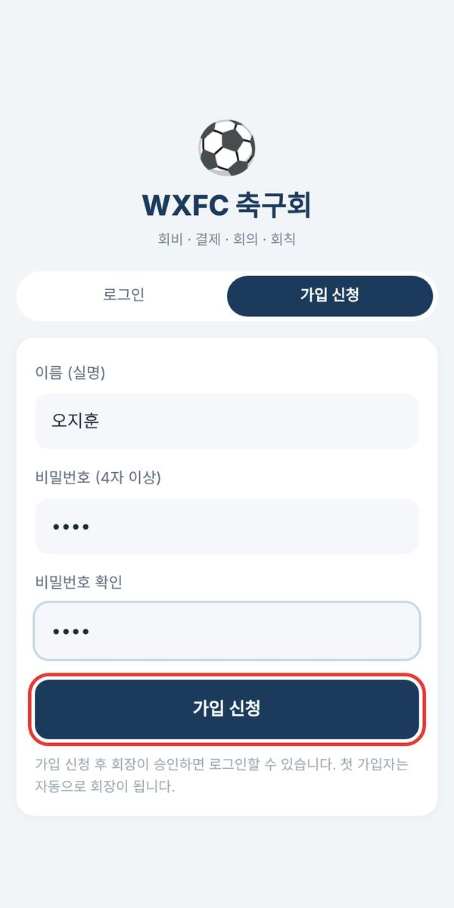
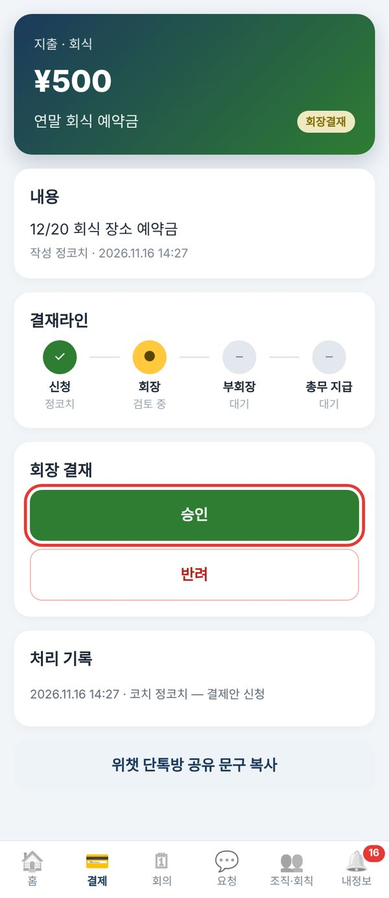
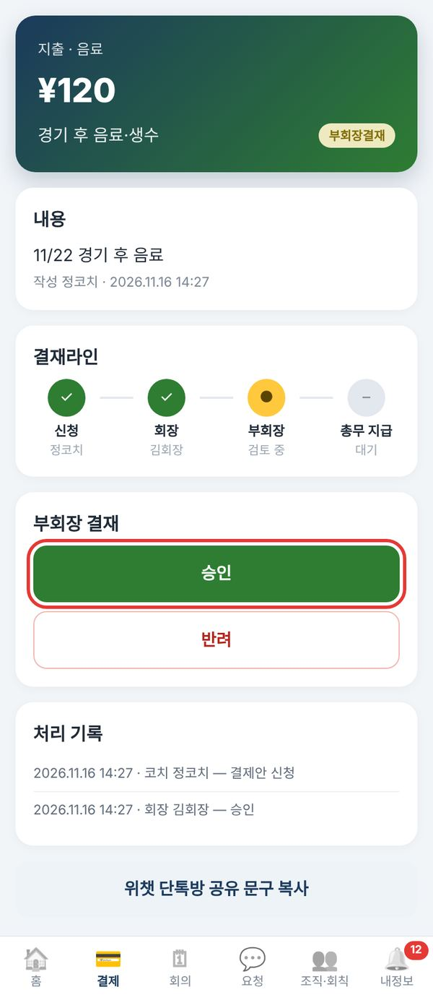
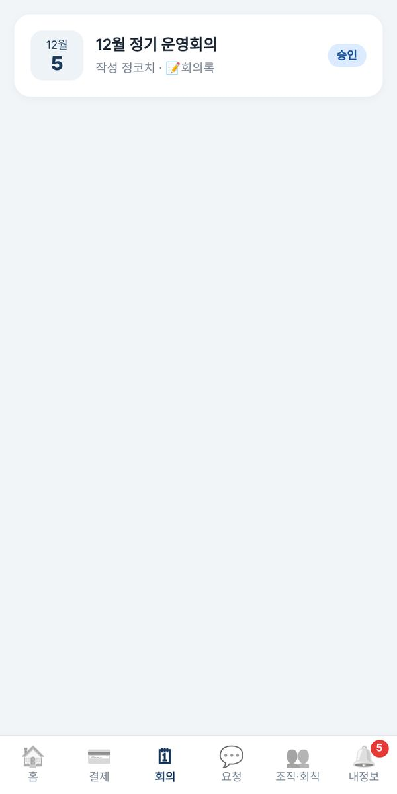
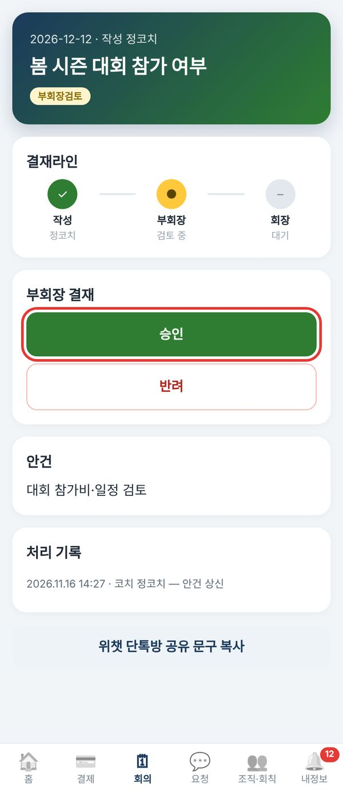
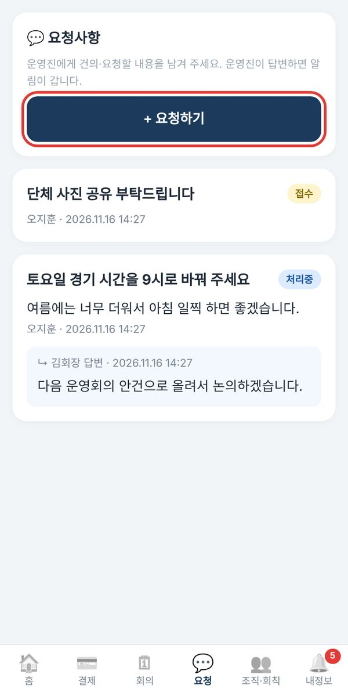

💡 그림 속 빨간 테두리가 눌러야 할 곳입니다.
1. 처음 시작하기
모든 회원- 휴대폰으로 https://wxfc-manager.github.io 에 들어갑니다. (위챗 단톡방 링크를 눌러도 됩니다)
- 위쪽의 [가입 신청]을 누릅니다.
- 실명과 비밀번호(4자 이상)를 두 번 입력하고 아래 [가입 신청] 버튼을 누릅니다.
- 회장이 승인하면 [로그인]에서 같은 이름·비밀번호로 들어갈 수 있습니다.

위챗 안에서 열었다면 오른쪽 위 ··· → '브라우저로 열기' 후에 추가하세요.
2. 홈 화면
모든 회원로그인하면 처음 보이는 화면입니다.
- 현재 잔액: 회비 수입에서 지출을 뺀 금액이 자동으로 계산됩니다.
- 공지: 회장·총무가 올린 공지입니다.
- 내가 처리할 일: 운영진에게만 보입니다. 내 결재가 필요한 일이 여기 뜹니다.

아래쪽 메뉴
| 🏠 홈 | 잔액·공지·할 일 |
|---|---|
| 💳 결제 | 돈을 쓴 내역 전체 |
| 🗓 회의 | 회의 안건·회의록 |
| 💬 요청 | 회원 건의·요청사항 |
| 👥 조직·회칙 | 운영진 명단, 회칙 파일 |
| 🔔 내정보 | 알림, 비밀번호 변경, (회장) 회원 관리 |
3. 결제
보기: 모든 회원 올리기: 운영진돈을 쓸 때는 반드시 아래 순서를 거칩니다.
일반 회원은 [결제] 메뉴에서 모든 내역을 볼 수만 있습니다.

① 결제안 올리기 운영진
- [결제] 메뉴 → 오른쪽 아래 초록색 [+ 결제안]
- 제목, 항목, 금액, 사유를 적고, 영수증·견적 사진이 있으면 [+]를 눌러 첨부합니다.
- [결제안 올리기]를 누르면 회장에게 알림이 갑니다.

② 회장 승인 회장
- 홈의 '내가 처리할 일' 또는 알림에서 해당 결제안을 엽니다.
- 내용을 확인하고 [승인]을 누릅니다. 안 되는 경우 [반려]를 누르고 이유를 적습니다.

③ 부회장 승인 부회장
회장이 승인하면 부회장에게 알림이 갑니다. 똑같이 [승인] 또는 [반려]를 누릅니다.

④ 총무 송금 → 지급완료 총무
- 부회장까지 승인되면 총무에게 '송금 요청' 알림이 갑니다.
- 총무 개인 위챗으로 해당 금액을 송금합니다.
- 위챗 송금 완료 화면을 캡처합니다.
- 결제안을 열고 [+]를 눌러 캡처 사진을 첨부합니다.
- [지급완료]를 누릅니다. 이때 잔액에서 자동으로 빠집니다.


⑤ 회비 등 수입 등록 회장·총무
[결제] → 파란색 [+ 수입 등록] → 제목(예: 11월 회비)과 금액 입력 → 등록. 바로 잔액에 더해집니다.
4. 회의 안건과 회의록
보기: 모든 회원 (확정된 회의만) 올리기: 운영진
① 안건 올리기 운영진
- [회의] → 오른쪽 아래 [+ 회의 안건]
- 제목, 날짜, 안건 내용을 적고 자료(사진·PDF·문서)가 있으면 [+ 파일 첨부]
- [결재 올리기]
② 결재 부회장 → 회장
알림을 받으면 회의를 열고 [승인] 또는 [반려]를 누릅니다.

③ 회의록 쓰기 운영진
회장이 승인한 회의를 열고, 회의록 칸 오른쪽 [작성·수정] → 회의 결과 입력 → [저장하고 회원에게 알림].

5. 요청사항
모든 회원일반 회원이 운영진에게 건의하거나 요청할 때 씁니다. 일반 회원이 글을 쓸 수 있는 유일한 곳입니다.
- 아래 메뉴 [💬 요청] → [+ 요청하기]
- 제목과 내용을 적고 [보내기] → 운영진 모두에게 알림이 갑니다.
- 운영진이 답변하면 나에게 알림이 옵니다.

답변하기 운영진
요청 아래 칸에서 상태(접수 / 처리중 / 완료)를 고르고 답변을 적은 뒤 [답변 저장].

6. 조직도와 회칙
모든 회원[조직·회칙] 메뉴에서 운영진 명단과 회칙 파일을 볼 수 있습니다. 회칙은 [열기]를 누르면 됩니다.

회칙 올리기·바꾸기 회장·총무
같은 화면의 [회칙 파일 업로드](또는 [새 회칙으로 교체]) → 휴대폰에 저장된 PDF·워드 파일 선택. 모든 회원에게 알림이 갑니다.
7. 회장 전용: 회원 관리
회장[내정보] 메뉴를 아래로 내리면 회원 관리가 있습니다.

| 가입 승인 | '가입 승인 대기' 회원의 [승인] (모르는 사람은 [거절]) |
|---|---|
| 운영진 지정 | 이름 옆 칸을 눌러 부회장 / 총무 / 감독 / 코치 / 회원 중 선택 |
| 직책 이름 | [⋯] → 1번 (예: 경기이사) |
| 비밀번호 초기화 | [⋯] → 2번 → 새 비밀번호를 정해서 본인에게 알려 주기 |
| 회원 삭제 | [⋯] → 3번 (탈퇴한 회원) |
| 홈 공지 | 같은 화면의 홈 공지 칸에 쓰고 [공지 저장] |
권한 정리
| 일반 회원 | 운영진 | |
|---|---|---|
| 모든 내역 보기 | ✅ | ✅ |
| 요청사항 쓰기 | ✅ | ✅ |
| 결제안·회의 안건 올리기 | ❌ | ✅ |
| 결재 | ❌ | 회장·부회장 |
| 지급완료 | ❌ | 총무 |
8. ★ 인수인계 방법
회장이 바뀔 때 꼭 하세요인수인계는 두 가지입니다. ①은 버튼 하나, ②는 고장 대비용입니다.
① 프로그램 안 회장 인계 (1분)
- [내정보] → 아래쪽 '회장 인계'
- '새 회장 선택'에서 다음 회장을 고릅니다.
- [회장 인계하기] → 확인. 나는 자동으로 일반 회원이 됩니다.

총무·부회장·감독·코치가 바뀔 때는 회장이 회원 관리에서 역할만 바꾸면 됩니다.
② 사이트 관리 계정 넘기기 (10분, 고장 대비)
사이트는 GitHub(화면)과 Supabase(데이터) 두 곳에 있습니다. 평소에는 들어갈 일이 없지만, 고장 났을 때를 위해 관리자를 넘겨 둡니다.
새 관리자가 할 일
- github.com 에서 회원가입 (이메일만 있으면 됨, 휴대폰 번호 불필요)
- 가입한 GitHub 아이디를 이전 관리자에게 알려 줍니다.
이전 관리자가 할 일
- GitHub:
github.com/orgs/WXFC-Manager/people접속 → [Invite member] → 새 관리자 아이디 입력 → 역할 Owner → 초대 - Supabase:
supabase.com/dashboard→ 왼쪽 위 조직 이름 → Team → [Invite] → 새 관리자 이메일 → 역할 Owner → 초대 - 새 관리자가 두 곳의 초대 메일에서 [수락] (Supabase는 'Continue with GitHub'로 로그인)
- 수락이 끝난 것을 확인한 뒤, 이전 관리자는 두 곳에서 Leave(나가기)
9. 문제가 생겼을 때
| 증상 | 해결 |
|---|---|
| '서버가 응답하지 않습니다' / 계속 '불러오는 중' | 사이트 관리자가 supabase.com/dashboard → wxfc 프로젝트 → 'Paused'라고 되어 있으면 [Restore] 버튼. 몇 분 뒤 다시 접속. |
| 로그인이 안 됨 | 이름은 가입할 때와 똑같이(띄어쓰기 포함). 비밀번호를 잊었으면 회장에게 초기화 요청. |
| '승인 대기 중입니다' | 회장이 아직 가입을 승인하지 않았습니다. 회장에게 알려 주세요. |
| 사진·파일이 안 올라감 | 파일 하나가 20MB를 넘으면 안 됩니다. 와이파이에서 다시 시도. |
| 위챗 안에서 파일 저장이 안 됨 | 오른쪽 위 ··· → '브라우저로 열기' 후 다시 시도. |
| 사이트가 아예 안 열림 | 잠시 후 다시 시도. 계속 안 되면 VPN을 켜거나 끄고 시도. |